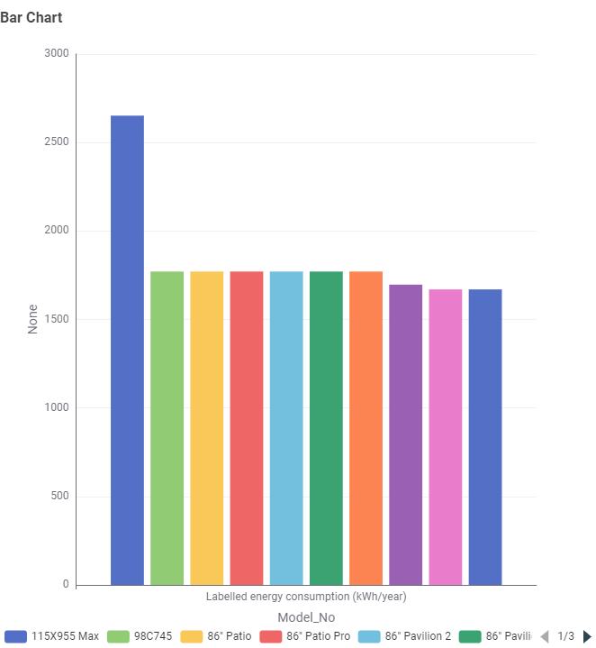
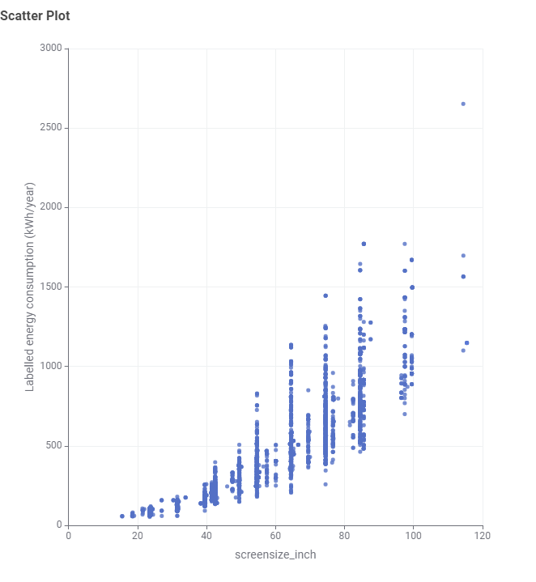
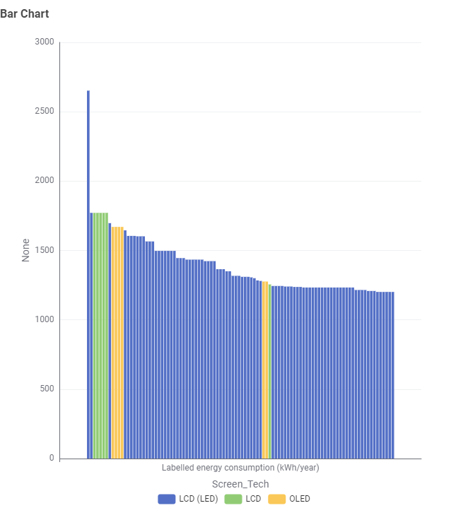
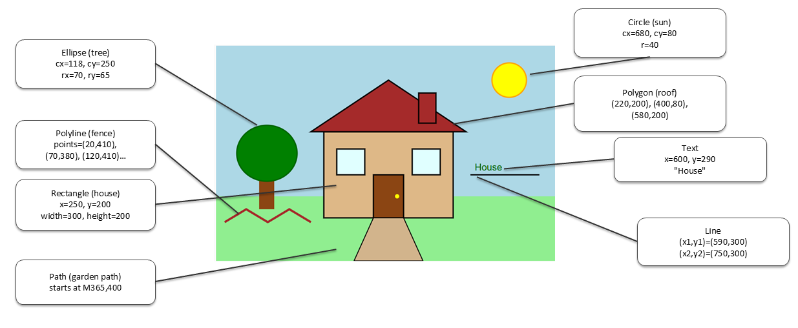

TV Energy Consumption
Choosing a new TV involves more than comparing price and screen size. Different televisions can also use different amounts of energy.
This data story explores TV energy consumption by comparing different TV models, screen sizes and screen technologies. The aim is to help customers understand these differences and make a more informed choice when buying a TV.
TV Models

Energy consumption can vary between different TV models. Some models use noticeably more energy than others, which means the choice of TV model can affect long-term electricity usage.
Screen Size

The visualisation shows the relationship between screen size and energy consumption. Larger TVs generally tend to consume more energy, although screen size is not the only factor that affects energy use.
Screen Technology

Different screen technologies can also have different levels of energy consumption. The chart compares the energy use of TVs using technologies such as LCD, LED and OLED. This shows that screen technology is another factor customers can consider when comparing TVs.
Conclusion
The visualisations show that TV energy consumption can vary depending on the model, screen size and screen technologies.
Customers should consider energy consumption together with other features when choosing a television. Comparing these factors can help them choose a TV that suits their needs while also reducing energy use.
Exercise 4.1 - SVG House and Garden
Step 1 - SVG Shapes
Step 2 - SVG Coordinate System
The annotated image below shows how the coordinates used in the SVG code match the positions of the different shapes in the drawing.

Step 3 - Customised SVG Shapes
The SVG house was customised by changing colours and strokes, and by adding extra objects to the garden.
Step 4 - Grouping SVG Elements
The two windows are placed inside a group so they share the same styling. Transform and translate are used to position each window.